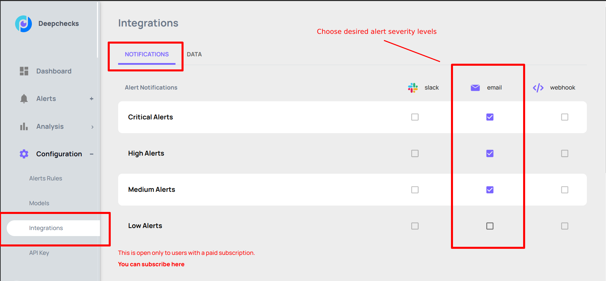
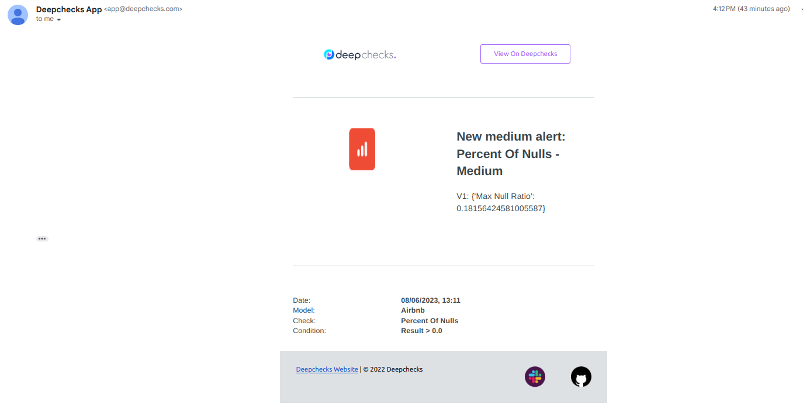
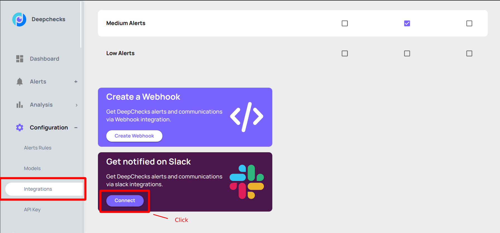
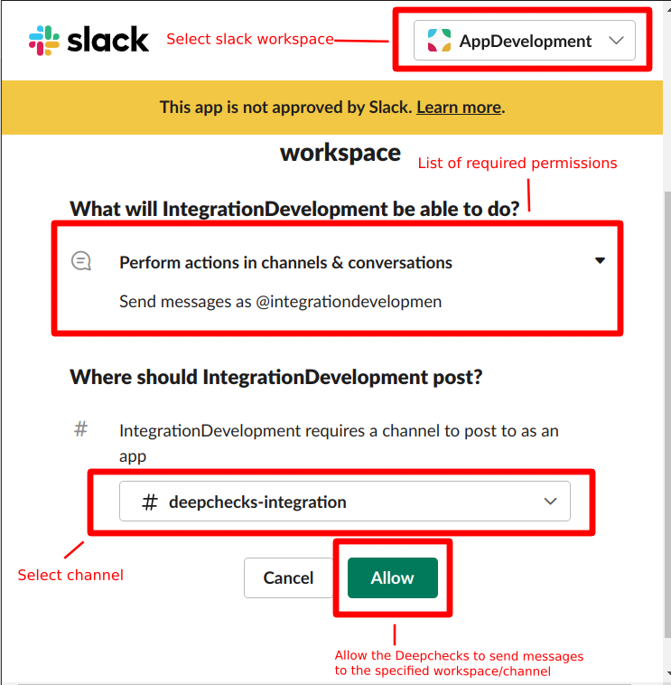
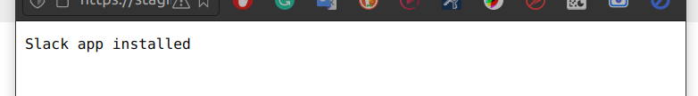
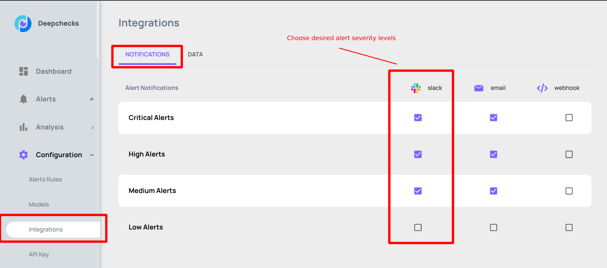
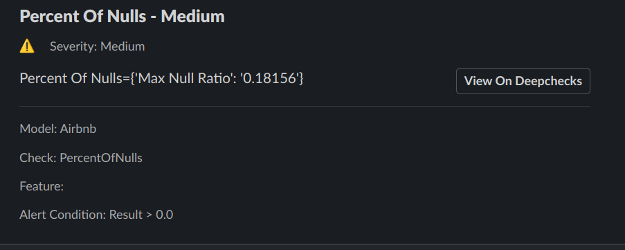
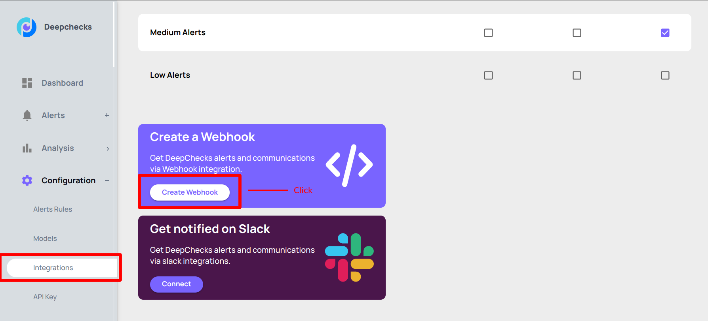
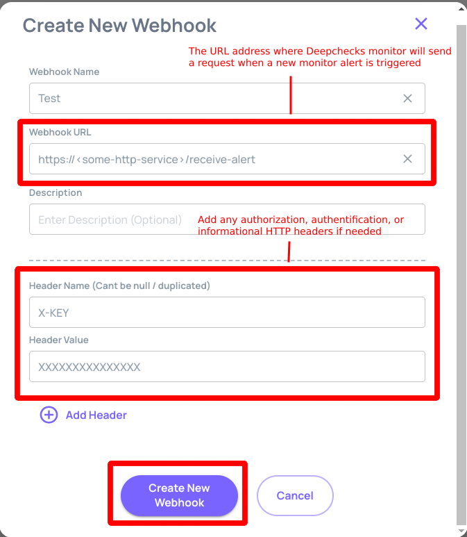
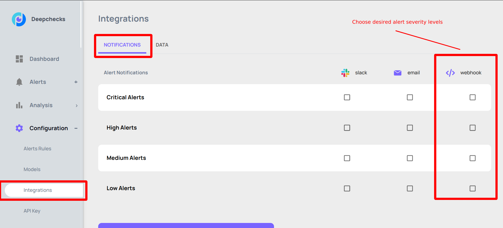

Integrations#
Notifications#
Email Notifications#
To configure email notifications go to the page ‘Configurations/Integrations’ and click on the ‘Notifications’ tab. On the display table mark the alert severity levels for which you would like to receive notifications on.
{kind=link}
An example of an email notification.
{kind=link}
Slack Notifications#
To configure Slack notifications go to the page ‘Configurations/Integrations’ and click on the ‘Notifications’ tab. In order to authorize the Deepchecks to send messages to a desired Slack workspace click on the button ‘Connect’ within the ‘Get notified on Slack’ rectangle.
{kind=link}
A click on the button shows a Slack application authorization dialog. Select a slack workspace and channel where the Deepchecks must send notifications and press the ‘Allow’ button.
{kind=link}
As an acknowledgment of a successful operation the ‘Slack App installed’ message is shown. If you see any other message, please-reach out the Deepchecks support.
{kind=link}
On the table mark alert severity levels about which you want to be notified via Slack.
{kind=link}
An example of a slack message.
{kind=link}
Webhooks#
Webhooks functionality gives users a possibility to integrate their Deepchecks organization account with any kind of third-party applications and services that expose reachable public HTTP endpoint. Saying shortly, you give the Deepchecks an URL address and each time when an alert is raised the Deepchecks will send an ‘HTTP POST’ request with an alert payload to it.
To configure a webhook go to the page ‘Configurations/Integrations’ and click on the ‘Notifications’ tab.
To create a webhook click on the button ‘Create Webhook’.
{kind=link}
Fill the form.
Make sure that the specified ‘Webhook URL’ is reachable and is ready to receive ‘HTTP POST’ requests. If an exposed HTTP endpoint requires an authentification then add appropriate ‘HTTP Header’ values to the webhook.
{kind=link}
On the table mark alert severity levels with which the Deepchecks must send requests to the specified HTTP endpoint.
{kind=link}
An example of an HTTP request payload.
POST /index HTTP/1.1 200 OK
{
"alert_id": 15,
"alert_name": "model: Airbnb monitor: Percent Of Nulls - Medium",
"alert_rule": "Medium - Percent Of Nulls > 0.0",
"severity": "medium",
"alert_link": "https://app.deepchecks.com/configuration/alert-rules?modelId=6&severity=medium"
}
Data Connectors#
TODO